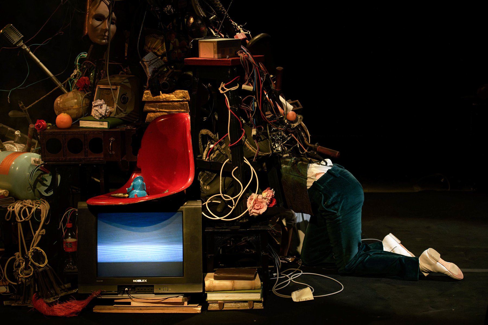
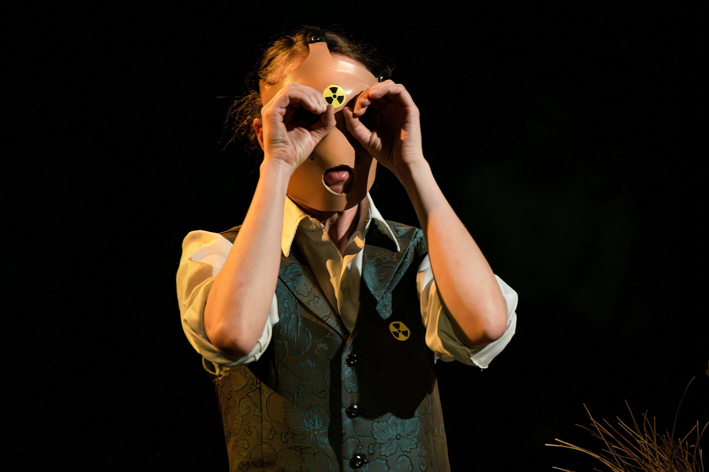
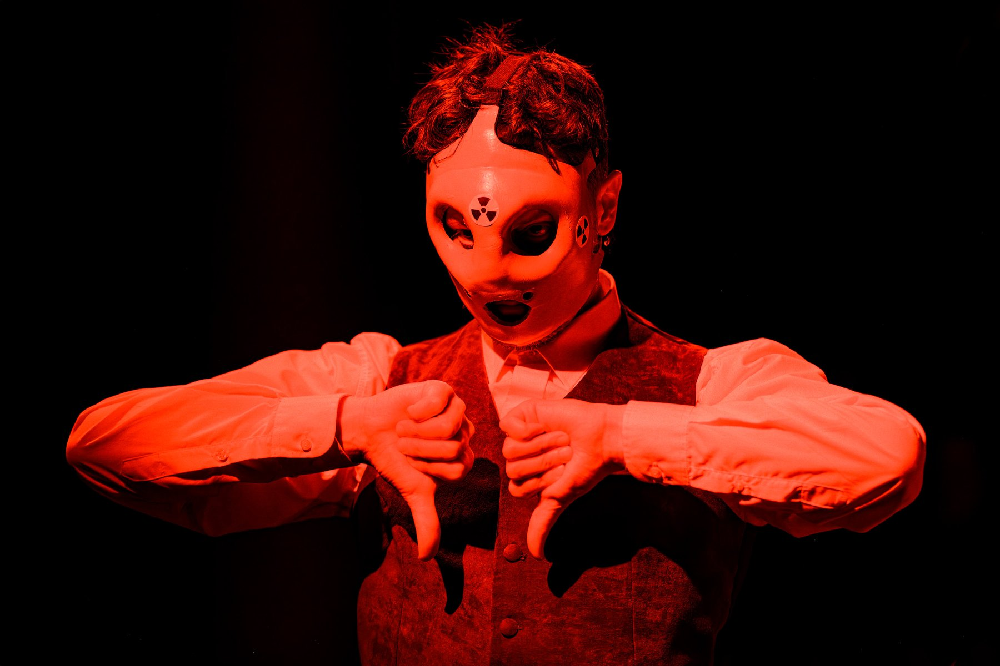
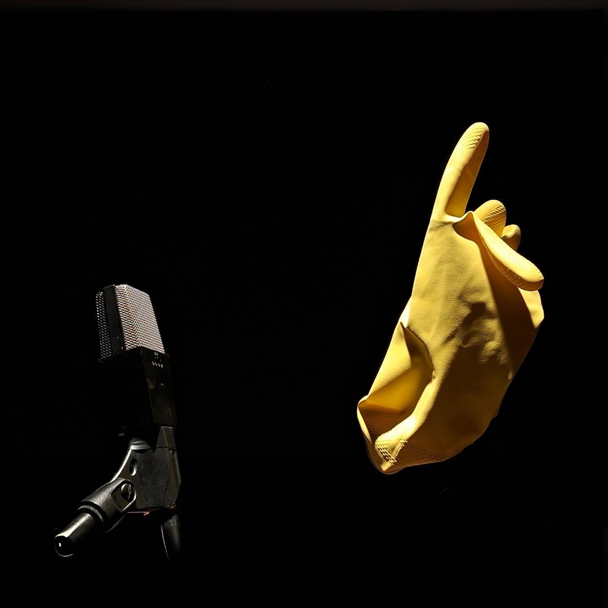

- Emma Terno · Valentín Pelisch
- GRAME — CNCM (Lyon) · CETC — Teatro Colón
- STOPERA!
- — Emma Terno · Valentín Pelisch
- — Manuel Atwell · Emma Terno
- Carolina Cervetto
- Mariano Malamud
- Juan Ignacio Ferrera
- Lautaro Abrego
- Laura Fainstein
- Adrián Grimozzi
- Magdalena Picco
- Belén Parra · Florencia Fiori